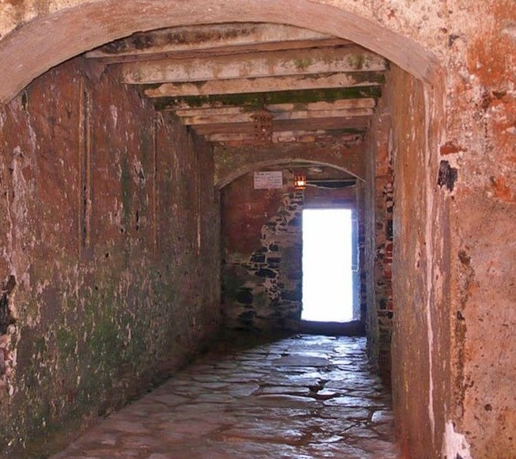
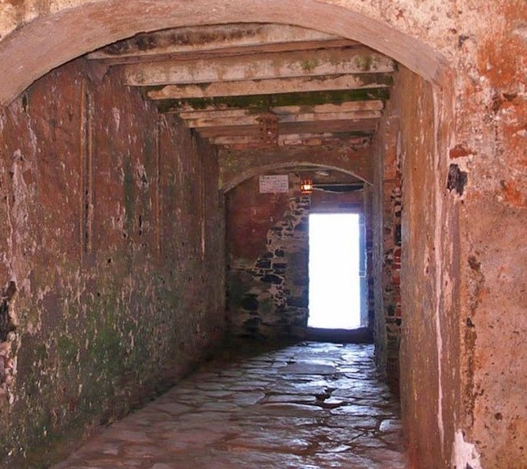

PRESENTATION
HISTOIRE
ARTS
Administration
QUELQUES ENDROITS DE L'ÎLE
Maison des Esclaves
Musée de la Mer
Au milieu des bougainvillées, une grande maison de la Compagnie des Indes construite au xviiie siècle abrite le musée ouvert en 1960 par l'IFAN et entièrement restauré en 1995. Il est réputé pour sa collection de 750 espèces de poissons et 700 espèces de mollusques. Les écosystèmes et l'habitat de la région y sont également présentés.
Musée historique
Situé sur la pointe nord de l'île, le Musée historique – rattaché à l'Institut fondamental d'Afrique noire (IFAN) – occupe l'ancien Fort d'Estrées. Il est consacré à l'histoire générale du pays, des origines à l'indépendance, et tout particulièrement à celle de l'île de Gorée.
Musée de la Femme
Autrefois aménagé dans l'ancienne demeure d'une riche signare, Victoria Albis, dont le dernier propriétaire avant sa cession à l'état sénégalais fut Armand-Pierre Angrand, maire de Gorée et de Dakar, le musée a été ouvert en 1994, sous la direction de la femme de lettres Annette Mbaye d'Erneville. Désormais situé à Dakar, c'est également un lieu de formation et d'animation qui rend hommage aux femmes du pays, connues ou non, et informe sur leur vie quotidienne.
Ancien palais du Gouverneur
Les anciens commandants supérieurs de Gorée logeaient dans ce palais situé à l'ouest de l'île. La demeure achevée en 1864 est aujourd'hui laissée à l'abandon.
Ancienne école William-Ponty
L'école William Ponty (du nom du gouverneur général de l'Afrique-Occidentale française William Merlaud-Ponty) a été de 1913 à 1937 l'école normale fédérale de l'AOF. Elle a formé de nombreux cadres africains avant d'être transférée à Sébikotane. Église Saint-Charles-Borromée
L'église Saint-Charles Borromée est située au centre de l'île de Gorée (Sénégal), sur la rue du Chevalier de Boufflers. Mosquée
Gorée possède l'une des plus anciennes mosquées en pierre du pays. Celle-ci a été construite en 1890, au pied du versant ouest du Castel. Castel
Surplombant l'île sur sa pointe sud, le Castel constituait une position stratégique et offre aujourd'hui un large panorama sur le continent. Face à l'ouest le fort Saint-Michel y fut construit par les Français en 1892. En 1907 on y installa un télémètre permettant de mesurer l'éloignement des navires afin de régler les canons. De l'autre côté un canon d'une portée de 14 km permit à la France de Vichy de couler un bateau anglais le 23 septembre 1940. Saboté par les Français au moment de l'indépendance, il n'a jamais resservi. Université des Mutants
L'Université des Mutants est un centre international de rencontres et de conférences fondé en 1979 à l'initiative du Président Léopold Sédar Senghor et de l'écrivain et philosophe français Roger Garaudy. Le bâtiment de l'Université est devenu, depuis le 3 juin 2014, le siège social de la Fondation Mondiale pour le Mémorial et la Sauvegarde de Gorée.
{kind=link}
Située à 4 kilomètres au large de Dakar, à vingt minutes par la chaloupe, l’Île de Gorée est un des endroits les plus attachants du Sénégal. Elle se caractérise par le témoignage exceptionnel qu’elle apporte sur l’une des plus grandes tragédies de l’histoire des sociétés humaines : la traite négrière. Les différentes unités de cette « île mémoire » — forts, bâtisses, rues, places, etc. — racontent, chacune à sa manière, l’histoire de Gorée qui a été du XVe au XIXe siècle le plus grand centre de commerce d’esclaves de la côte africaine.
L'île de Gorée, ou simplement Gorée, est à la fois une île de l'océan Atlantique nord située dans la baie de Dakar et l'une des 19 communes d'arrondissement de la capitale du Sénégal. C'est un lieu symbole de la mémoire de la traite négrière en Afrique, reconnu officiellement par l’Organisation des Nations unies (ONU) en 1978 : Gorée, « île-mémoire » de cette tragédie, fut ainsi l’un des tout premiers lieux à être portés sur la liste du patrimoine mondial gérée par l'Organisation des Nations unies pour l'éducation, la science et la culture (UNESCO).
Le navigateur portugais Dinis Dias atteint l'île de Gorée en 1444, qu'il baptise « Palma ». Les Hollandais s’emparent de Gorée en 1588 et la baptisent Goede Reede, « la bonne rade », étymon du nom actuel. Les Français s'implantent sur l’île le 1er novembre 1677, mais les Anglais leur disputent cette position jusqu'à la paix d'Amiens en 1802. L'île fut occupée par les Anglais de 1804 à 1817 puis rendue à la France.
La traite des esclaves perdure pendant trois siècles sur les côtes africaines (Gambie, Saint-Louis du Sénégal, Bénin, Ghana…). Les centres concentrationnaires des esclaves africains en partance pour l’Amérique se situent surtout à Saint-Louis, point de convergence du commerce triangulaire.
À Gorée, l'ancienne demeure de la signare Anna Colas Pépin (nièce d'Anne Pépin), connue dans le monde entier sous le nom de Maison des Esclaves, est un lieu plus symbolique qu’historique. Cependant, l'île de Gorée reste une place qui a joué un rôle non négligeable dans la traite, par la présence de captiveries françaises et le nombre d'esclaves déportés (environ 500 par an entre 1726 et 1755 et 15 476 entre 1761 et 1848). L'historien américain Philip Curtin (en) estime ce nombre entre 900 et 1 500 personnes.
Les propriétaires des villages négriers sur le continent où étaient stockés les captifs étaient les Rois Wolof du Cayor et les Rois Toucouleurs du haut fleuve Sénégal. L'on trouve aux Archives nationales de France, rue Soubise à Paris, ainsi qu'à la Bibliothèque Nationale François Mitterrand, les informations concernant ces rois négriers et la macabre comptabilité de ce commerce.
Les Rois du Cayor se heurtèrent néanmoins à une forte résistance des Lébous et des Sérères habitant la petite côte du Sénégal, lesquels furent décrits dès le début du xve siècle par le navigateur Alvise Cadamosto comme des peuples refusant de vendre des esclaves.
En parallèle du commerce des esclaves contrôlé par l'administration des Rois de France et d'Angleterre, le commerce de la gomme, de l'arachide, des peaux, de l'or du Galam, des épices pauvres ainsi que la fourniture d'ouvriers qualifiés (charpentiers, maçons…) assurent la prospérité économique des signares de l'île de Gorée du xviiie au xixe siècle. Les signares de Gorée, en particulier Anna Colas Pépin lanceront, le commerce de l'Arachide au Sénégal en 1841 à Rufisque ce qui provoquera le développement économique de ce village qui deviendra une ville.
Avec la fondation de Dakar en 1857, à la demande des notables métis de l'île, signares en tête, Gorée perd progressivement de son importance. En 1872 l'administration coloniale française crée les deux communes de Saint-Louis et Gorée, les deux premières communes d'Afrique de l'ouest sur le modèle occidental, dotées exactement du même statut que les autres communes françaises (statut ultérieurement étendu à Dakar et Rufisque : les quatre communes). Dakar, sur le continent, fait partie de la commune de Gorée, dont l'administration se trouvait sur l'île. Cependant, dès 1887, Dakar est détachée de la commune de Gorée et devient une commune de plein exercice. La commune de Gorée en est réduite à sa petite île.
En 1891, la population de Gorée s'élève à 2 100 habitants contre 8 737 pour Dakar. En 1926, l'écart s'accentua : les Goréens ne sont plus que 700, alors que la population de Dakar atteint 33 679 personnes. C'est ainsi que la fusion de Gorée avec Dakar est décidée en 1929. La commune de Gorée disparaît et Gorée n'est plus désormais qu'une petite île sur la commune de Dakar. Le lieutenant Robert Gaffiot publie en 1933 un ouvrage dont le titre reflète bien ce déclassement : Gorée, capitale déchue.L'atmosphère attachante d'une île sans voitures ni bicyclettes, les tons pastels de ses façades, son climat agréable, mais aussi la proximité de la capitale ont conduit de nombreux artistes à s'établir à Gorée, temporairement ou définitivement. Le plus connu est sans doute le peintre Fallou Dolly et ses fixés sous verre, mais on peut citer également Moussa Sakho ,Gabriel Kemzo Malou ou Cheikh Keita. Beaucoup d'entre eux sont installés aux abords du Castel.
La musique n'est pas en reste. Des artistes tels que Iannis Xenakis , Kassav' ou Youssou N'Dour y ont puisé leur inspiration. Un opéra lui a été dédié en 1966 à l'occasion du premier Festival mondial des arts nègres . La chorale de l'église Saint-Charles-Borromée bénéficie d'une certaine notoriété. Le célèbre chanteur brésilien Gilberto Gil a composé la belle chanson "La lune de Gorée", qu'il chante dans l'album Quanta.
Des scènes de plusieurs films ont été tournées dans ce cadre photogénique. L'Histoire d'Adèle H. de François Truffaut montre ainsi Isabelle Adjani – dans le rôle de la fille désespérée de Victor Hugo – errant dans les rues en quête d'un amour impossible.
En 2005 a eu lieu la première édition du Gorée Diaspora Festival, une manifestation lancée par la commune et associant danses, musique, arts plastiques, conférences, sports, carnaval et spectacles sons et lumières.
La Fondation Dapper organise également depuis 2012 des manifestations culturelles gratuites de grande envergure sur l'île de Gorée. Après Masques et mémoires (décembre 2012 à avril 2013), l'exposition Formes et paroles (novembre 2014 à mars 2015), organisée en partenariat avec la mairie et sous le haut patronage du ministère de la culture, a exposé sur l'esplanade, la place devant l'église et le centre socio-culturel des artistes d'envergure internationale. En 2017, la Fondation Dapper a participé à la manifestation Regards sur Cours avant d'organiser en 2018 dans le cadre de la Biennale de Dakar, Le Off de Dapper, une grande exposition réunissant installations, photographies et street art.
En 1996 le Parlement se prononce en faveur d'une profonde réforme de l'organisation territoriale du Sénégal. Dans le cadre de cette politique de décentralisation, la commune de Dakar, devenue trop étendue et trop peuplée, se voit divisée en 19 communes d'arrondissement, auxquelles des pouvoirs plus grands sont conférés.
Pour la commune de Gorée c'est une sorte de résurrection. Avec le titre de « Commune d'Arrondissement de l'île de Gorée », elle reprend possession des bâtiments de l'ancien hôtel de ville au centre de l'île, un édifice qui avait hébergé la mairie de la précédente commune de Gorée entre 1872 et 1929.
Cette nouvelle orientation est l'une des réalisations majeures de l'équipe municipale, dirigée successivement par Augustin Ly, puis Urbain Diagne à partir de 1975.
Sous le mandat d'Urbain Diagne, militaire de carrière et adjoint spécial au Maire de Dakar chargé de Gorée à partir de 1980, qui s'achèvera par sa retraite politique en 2001, Gorée renaît notamment par sa classification sur la liste du patrimoine mondial de l'Unesco (1978) avec le concours de son Secrétaire Général, le Sénégalais Amadou-Mahtar M'Bow et d'Abdou Diouf, alors Premier Ministre de Léopold Senghor. L'île retrouve son cachet d'antan : rénovation des bâtiments et infrastructure adaptée aux normes architecturales d'origine, re-fleurissement par l'Association des Amis de la Nature présidée alors par Maître Marie-Josée Crespin.
Sur le plan sanitaire, Gorée est désormais dotée d'un dispensaire rénové par l'ordre souverain de Malte, dont Urbain Diagne est chevalier de grâce, membre de l'unique commanderie d'Afrique basée au Sénégal.
L'île se modernise et s'ouvre au monde par de nombreux jumelages avec d'autres villes également chargées d'Histoire : Drancy (France), Robben Island (Afrique du Sud), Sainte-Anne (Martinique), Lamentin (Guadeloupe). Gorée est désormais un lieu de passage et de recueillement obligé pour les grands de ce monde en visite officielle au Sénégal (Jean-Paul II, Bill Clinton, Yasser Arafat…)[réf. nécessaire].
Elle devient également un lieu d'intense activité culturelle (festivals de jazz, expositions..) et intellectuelle (Université des Mutants, Fondation Soros, Maison d’éducation Mariama Bâ).
Gorée est alors un symbole de brassage ethnique et culturel, mêlant des habitants de toutes les régions du globe, et de tolérance religieuse, à l'image de la composition des familles multiconfessionnelles et métissées qui y vivent.
Cohabitent harmonieusement les communautés musulmane et chrétienne. On peut ainsi voir, traditionnellement, l'imam assister à la messe de la fête patronale Saint-Charles Borromée ou le curé prier à la mosquée lors de la fête de l'Aïd El Kebir (Tabaski)[réf. souhaitée].
Désormais, la commune d'arrondissement de Gorée est gérée par un conseil municipal, démocratiquement élu tous les cinq ans et d'un maire élu par les membres de ce Conseil.
Le maire actuel est Maître Augustin Senghor, élu en 2002, puis réélu en 2009. Président de l'Union sportive de Gorée, il est également membre du Rassemblement des écologistes du Sénégal - Les Verts et premier maire écologiste du pays.
La commune est rattachée à l'arrondissement de Dakar Plateau. Elle fait partie du département de Dakar dans la région de Dakar.
.jpg) 

{kind=link}
La Maison des Esclaves est un édifice historique situé sur l'île de Gorée, à Dakar au Sénégal. L'actuelle Maison des Esclaves daterait de l'année 1776. Elle est située dans la rue Saint-Germain, sur le côté est de l’île. Elle se trouve face au Musée de la Femme Henriette-Bathily.
En dépit des études historiques qui ont montré que la Maison des Esclaves n'aurait pas joué le rôle attribué par certains dans les traites négrières, elle reste un lieu qui revêt pour beaucoup une grande portée symbolique en tant qu'emblème de la traite négrière. Au fil des décennies, les récits de son ancien conservateur 2 Boubacar Joseph Ndiaye ont contribué à faire connaître la Maison des Esclaves dans le monde entier.
Cette maison aurait été la dernière esclaverie en date à Gorée. La première remonterait à 1536, construite par les Portugais, premiers Européens à fouler le sol de l'île en 1444. Au rez-de-chaussée se trouvent les cellules (hommes, enfants, chambre de pesage, jeunes filles, inapte temporaire). Dans celles réservées aux hommes, faisant chacune 2,60 m sur 2,60 m, on mettait jusqu’à 15 à 20 personnes, assis le dos contre le mur, des chaînes les maintenant au cou et aux bras. On ne les libérait qu'une fois par jour afin de leur permettre de satisfaire leurs besoins, généralement dans cette maison, ils y vivaient dans un état d'hygiène insupportable. L'effectif dans cette petite maison variait entre 150 à 200 esclaves. L'attente de départ durait parfois près de trois mois, ces esclaves ayant affaire à des voiliers pour leur transport. Dans cette maison, le père, la mère et l'enfant étaient séparés dans différentes cellules.
Un peu à l'écart, à droite du porche d'entrée, se trouve le bureau du maître des lieux, tapissé de documents et de citations humanistes, telles cette déclaration d'Hampâté Bâ : « En Afrique, quand un vieillard meurt, c'est une bibliothèque qui brûle » ou celle-ci de son propre cru : « Qu'à tout jamais, pour la préservation de ces lieux, les générations se souviennent pieusement des souffrances endurées ici par tant d'hommes de race noire ».
.jpg)
.jpg)
.jpg)
Aujourd'hui désaffectée, elle se trouve sur la place du Gouvernement.
L'ancienne église ayant été brûlée par des soldats pendant la nuit de Noël 1799, au moment de la reprise de l'île par les Anglais, les catholiques de Gorée sont restés privés d'église jusqu'à l'achèvement de ce nouvel édifice, en 1830, financé par les signares de Gorée.
{kind=link}
Un projet d'aménagement de l'esplanade est en cours. Il prévoit notamment des espaces de détente et l'intégration du site de commerce artisanal situé au bas du Castel.
.jpg){kind=link}
Sur le plateau se dresse un modèle réduit du Mémorial de Gorée, conçu par l'architecte milanais Ottavio Di Blasi, dont le projet architectural fut retenu en 1997 à l'issue d'un concours international organisé par l'UNESCO. Pour des raisons de sauvegarde patrimoniale et écologique, le mémorial sera construit à Dakar, dans le quartier de la Corniche Ouest.
{kind=link}